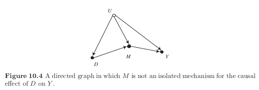

Download the notebook here!
Interactive online version: 
Mechanisms and causal explanation¶
The dangers of insufficiently deep explanations¶
We only identify total effects for selected subpopulations that are not necessarily of great economic interest.
Does compulsory school attendance affect schooling and earnings?
 We cannot distinguish between the direct positive effect of schooling on wages and the indirect negative effect through reduced work experience.
We cannot distinguish between the direct positive effect of schooling on wages and the indirect negative effect through reduced work experience.
Lifetime earnings and the Vietnam era draft lottery: Evidence from social security administrative records
This is the causal graphs that justifies the use of the draft lottery as an instrument to determine the effect of military service on wages.

However, alternatives can be forcefully argued that introduce several problems.

There is a path from the draft lottery to civilian experience that invalidates the instrument. Why?
There are four separate causal pathways between military services and wages.
Military service reduces schooling and work experience which reduces wages.
Military service reduces schooling, but increases work experience which increases wages.
The front-door criterion and identification of causal effects by mechanisms¶
Since \(U\) is unobserved, we cannot apply the back-door criterion directly to learn about the effect of \(D\) on \(Y\).

However, we can make some progress by its repeated application.
Front-door criterion¶
If one or more unblocked bach-door paths connect a causal variable to an outcome variable, the causal effect is identified by conditioning on a set of observed variables \(\{M\}\), that make up an identifying mechanism if
Condition 1 (exhaustiveness) The variables in the set \(\{M\}\) intercept all directed paths from the causal variable to the outcome variable.
Condition 2 (isolation) No unblocked back-door paths connect the causal variable to the variables in the set \(\{M\}\), and all back-door paths from the variables in the set \(\{M\}\) to the outcome variable can be blocked by conditioning on the causal variable.
\(\rightarrow\) There is no guidance on on how deep and indentifying mechanism must be in order to be sufficiently deep. This is determined by the standards of a particular research group or field of interest.

Alternative approaches¶
We can now take our pick between alternative identification strategies. See the following graph as an example.

[5]:
df = simulate_causal_graph()
We can condition on \(F\).
[12]:
model_specf = smf.ols("Y ~ D + F", data=df).fit()
print(
"Implementing conditioning on F, treatment effect of D on Y is {:5.2f}".format(
model_specf.params[1]
)
)
Implementing conditioning on F, treatment effect of D on Y is 0.50
We can condition on \(\{A, B\}\)
[14]:
model_specab = smf.ols("Y ~ D + A + B", data=df).fit()
print(
"Implementing conditioning on A and B, treatment effect of D on Y is {:5.2f}".format(
model_specab.params[1]
)
)
Implementing conditioning on A and B, treatment effect of D on Y is 0.50
We can pursue an instrumetal variables strategy.
[17]:
df["const"] = 1
model_speciv = IV2SLS(dependent=df["Y"], endog=df["D"], exog=df["const"], instruments=df["C"]).fit(
cov_type="unadjusted"
)
print("Implementing IV, treatment effect of D on Y is {:5.2f}".format(model_speciv.params[1]))
Implementing IV, treatment effect of D on Y is 0.48
We can also pursue the front-door criterion.
[21]:
model_specm = smf.ols("M ~ D", data=df).fit()
dm = model_specm.params[1]
model_specn = smf.ols("N ~ D", data=df).fit()
dn = model_specn.params[1]
model_specy = smf.ols("Y ~ M + N + D + F + G", data=df).fit()
ym = model_specy.params[1]
yn = model_specy.params[2]
print(
"Implementing front-door criterion, treatment effect of D on Y is {:5.2f}".format(
(dm * ym) + (dn * yn)
)
)
Implementing front-door criterion, treatment effect of D on Y is 0.49
Empirical example¶
In this seminal paper, the authors study the mechanisms that determine human capital accumulation. We can reproduce the core findings of the paper using our group’s research code respy. For more details, please visit the online documentation.
[ ]:
_, _, df_obs = rp.get_example_model("kw_97_basic")
df_obs.head()
We can look at the observed pattern of choices.
[ ]:
plot_choices(df_obs, "Observed")
Estimation of the model is rather time-consuming so we just take the estimated parameter values as given.
[ ]:
params = pd.read_pickle("material/params_revised.pkl")
params.head()
Now we can simulate a sample based on them and compare the fit between the observed and the simulated dataset. As the simulation is quite resource-intensive, we will again rely on a prepared dataset.
[ ]:
df_sim = pd.read_pickle("material/df_sim.pkl")
for label, df in [("Simulated", df_sim), ("Observed", df_obs)]:
plot_choices(df, label)
We can now evalaute the total causal effect of a \(\$2,000\) tuition subsidy on average wages in the final period.
[ ]:
df_pol = pd.read_pickle("material/df_pol.pkl")
plot_wage_distribution(df_sim, df_pol)
How do individual decision change so that we observe the change in wages?
[ ]:
plot_final_human_capital(df_sim, df_pol)